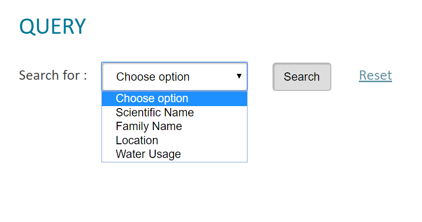
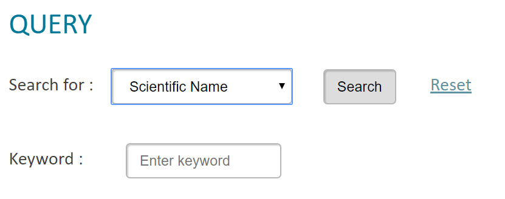
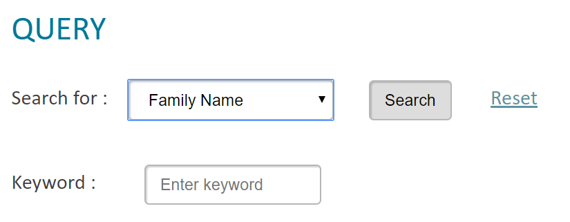
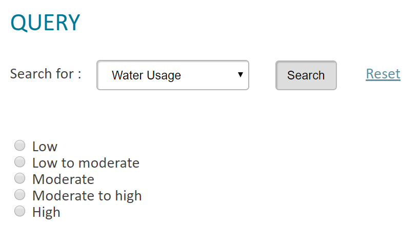
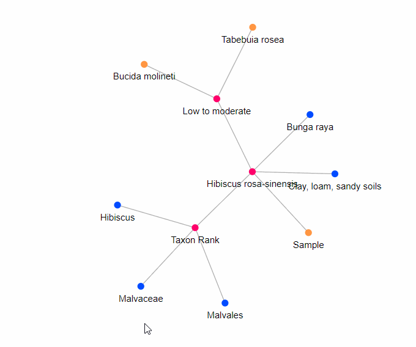
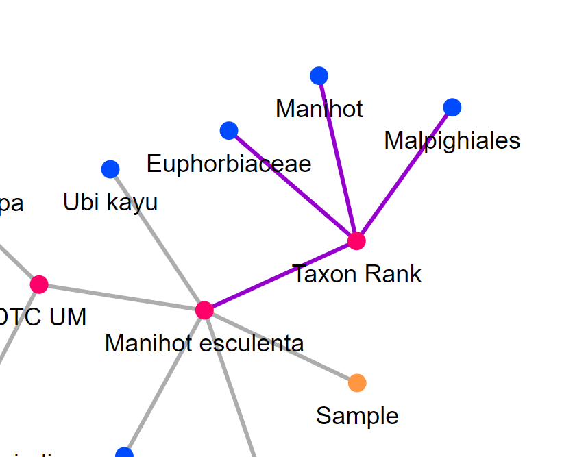
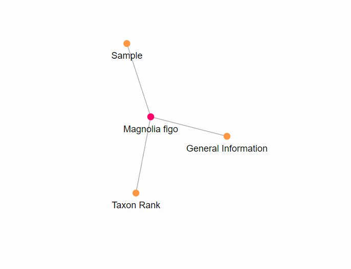
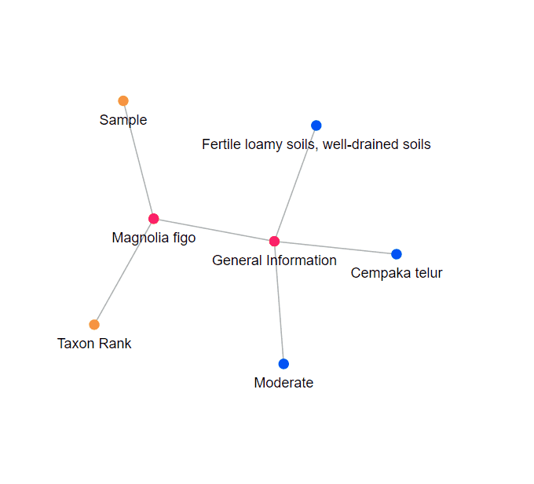
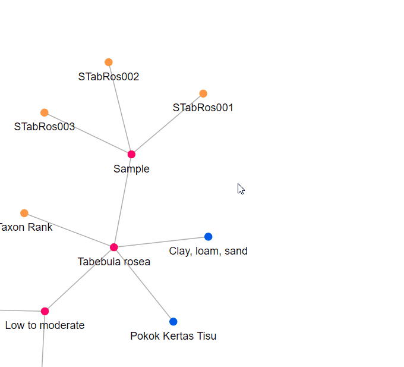
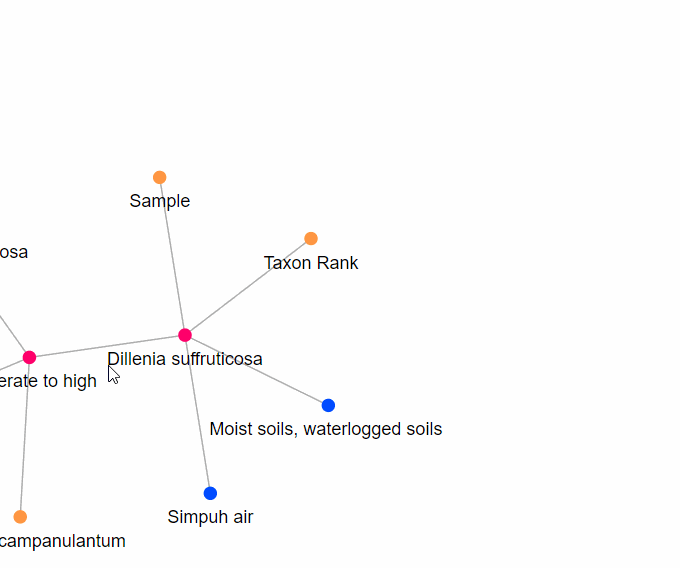

HOW TO USE PLANTVIZ
Querying in PlantViz
To use PlantViz, click on the PlantViz tab.
To start using PlantViz, users must first choose query parameter and then key in users search keyword or choose from option given. There are 4 query parameters available in PlantViz.
For the meantime, users can only choose one parameter at a time.
Scientific Name
- • Keyword must start with uppercase letter for the genus name. Example : “Ixora javanica”
- • Words must be separated with a single space. Example : “Lawsonia inermis”
- • NO extra spaces in the beginning or at the end of keyword.
Family Name
- • Keyword must start with uppercase letter. Example : “Acanthaceae”
- • NO extra spaces in the beginning or at the end of keyword.
Location

- • Choose ONLY one from option given.
Water Usage
- • Choose ONLY one from option given.
After that, click the button Search to start query or click button Reset to start over.
Do not click button Back to start a new query.
Visualization Features
PlantViz presents result of a query in graphical form to allow user to see the data instead of reading it. Users are also able to interact directly with the data by using some features available in the graphical viewer of PlantViz.
Basic features of the graphical viewer include zoom in, zoom out, and draggable.
1. View label of nodes

- 1. Hover on blue node.
- 2. Wait until the label of that node appears.
- 3. If it does not appear, click on the blue node and hover again.
- Note : other nodes may also have label.
2. Highlight nodes

The purpose of this features is to show relationship between data.
- 1. Hover to any node.
- 2. Any links that connected to that node will be highlighted in purple.
3. Expand and shrink graph
 
This feature is to avoid clutter in the graph. It also helps users to focus on a part of the graph.
- 1. To expand or shrink the graph, double click on any • node
- 2. To shrink the graph, double click on any • node
4. View thumbnail images of plant sample

Users can view thumbnail images(s) of some plant sample(s).
- 1. Hover on any node with sample ID.
- 2. A popup with thumbnail image(s) will appear.
5. View full information of plant image
Users are able to view full information of plant samples.
- 1. Hover on node Sample.
- 2. A popup “More detail” will appear.
- 3. Click on the popup. Users will be directed to a new page containing full information of the plant sample.